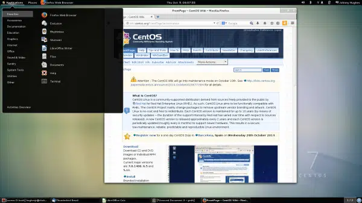

Windows, Android, iOS.
Na informática , é denominado software de sistema ou software base para a série de programas pré-instalados no computador ou sistema computacional e que permitem a interação com o Sistema Operacional (o software que rege o funcionamento de todo o sistema e garante sua operabilidade) , para apoiar outros programas e garantir o controle digital do hardware . O software básico costuma ser muito simples, inacessível à maioria dos usuários e gerencia o potencial físico do computador , de acordo com as instruções do sistema operacional , com o qual não deve ser confundido. Diferentes sistemas operacionais podem controlar o mesmo software básico , por exemplo, uma vez que se trata da apresentação comercial de um programa para gerenciar o software do sistema de uma forma ou de outra. No entanto, em muitos casos, ambos os termos são usados como sinônimos .
Carregadores de programa, Sistemas operacionais, Programas utilitários básicos
software de aplicaçao
software de aplicaçao
Os softwares de aplicação, por sua vez, são os programas que você conhece: players de vídeo e música, jogos, editores de textos, calculadoras, navegadores, apps de redes sociais e etc. Um software de aplicação tem como função executar tarefas das mais diversas, que podem ser de uso individual ou até mesmo global, o que pede que eles sejam mais robustos e seguros.
players de vídeo e música, jogos, editores de textos, calculadoras, navegadores, apps de redes sociais e etc.
software de programaçao
Software de programação. São as ferramentas usadas pelo programador para desenvolver novos softwares e programas. Usam diferentes linguagens de programação (C, Java, Python, Swift, etc.) e abrigam compiladores, intérpretes e depuradores, por exemplo. Os editores de texto, embora sejam softwares de aplicação também são softwares de programação, ...
C, Java, Python, Swift, etc.
software de bases de segurança
Software de segurança é um conjunto de diferentes tipos de software que fornecem dados e segurança de computador e rede em várias formas1. Os tipos de software de segurança incluem software antivírus, software de firewall, software de segurança de rede, software de segurança da Internet, software de proteção e remoção de malware / spamware, software criptográfico e muito mais
Norton 360 Deluxe
 software de base de dados
software de base de dados
Os dados contidos na maioria das bases de dados comuns são normalmente modelados em linhas e colunas numa série de tabelas para tornar o processamento de dados eficiente.
.1 BD • 1.1.1 BD
que faz a maioria dos sistemas de computador negócio funcionar,
3. Microsoft Network Monitor ...
software educacional
O software educacional é uma solução completa para instituições de ensino de todos os portes e segmentos. Trata-se de um sistema que oferece controle total sobre as atividades da instituição e de seus colaboradores.
de reunião, Ambiente Virtual de Aprendizagem, Mesa Educacional, lousa digital, LEGO® Education, jogos virtuais e realidade virtual
software de entretenimento
Implementação do Software Show do Milhão Para Fins Pedagógicos Desenvolvimento de Um Software Capaz de Criar Um Ambiente Virtual de Aprendizagem Ava Que Possibilite Uma Contribuição no Processo Ensino Aprendizagem Partindo do Erro do Jogador Aluno e Assim Estimular o Prosseguimento de Manipulação do Software Pedagógico Foi Observada a Realidade de Implementar o Software Show do Milhão Para Um Software Que Atenda a Área Pedagógica
Amazon Prime Video ... Crunchyroll ...
software de gestão empresarial
o painel de controle que concentra todos os dados, documentos e processos do negócio.
STRATWS One, Conta Azul, QuickBooks, Granatum, Trello, Agendor e Tiny ERP.
software de design
que se encarrega de fazer todo o planejamento anterior ao desenvolvimento, incluindo a definição da arquitetura do software, e transformar tudo em um documento ou conjunto de documentos capazes de serem interpretados diretamente pelo programador.
Softwares de Design Gráfico Online Softwares de Design Gráfico de Desktop Softwares de Design Gráfico em 3D
software por computador
conjunto de instruções escritas para serem interpretadas por um computador e executar tarefas específicas12345. Ele é responsável por fazer a máquina compreender e executar os comandos do usuário
Chrome, calculadora, Windows Media Player, Microsoft Word, AutoCAD, Adobe Photoshop.
software de sistema
são os responsáveis pelos sistemas operacionais de todos os dispositivos e auxiliam os usuários em seu uso, de forma visual e através de comandos
Windows, Android, iOS

Windows 1
Aqui começa a história da Microsoft com seus sistemas operacionais Windows. A primeira versão do SO foi lançada em novembro de 1985 e foi a tentativa inicial da companhia em entregar uma interface gráfica em 16 bits. O Windows 1 foi construído sobre o MS-DOS e seu funcionamento se apoiava bastante nas entradas inseridas nas linhas de comando do sistema. Apesar disso, a Microsoft já havia colocado suporte ao mouse, incluindo também um jogo para “ensinar” as pessoas a utilizarem esse novo periférico.

Windows 2
Dois anos depois da estreia no mercado de sistemas operacionais, a Microsoft resolveu fazer o lançamento do Windows 2 em dezembro de 1987. A grande inovação desse software era a possibilidade de as janelas sobreporem umas às outras, funcionalidade que parece piada nos dias de hoje. Também foi incluída a possibilidade de minimizar e maximizar as janelas; além disso, o conhecido Painel de Controle, que reunia as principais ferramentas do sistema, também fez a sua estreia no Windows 2. Outras duas ferramentas que apareceram debutaram nessa versão e permanecem até hoje, são elas o Word e o Excel — pertencentes ao Pacote Office.

Windows 3
Lançado em 1990, esse foi o primeiro SO da Microsoft a exigir um disco rígido para ser instalado. Também foi aquele que despertou a atenção do mercado para o nome “Windows”, colocando-o de vez na disputa pela popularidade. A grande inovação do Windows 3 diz respeito aos programas do MS-DOS que agora podiam ser executados em uma janela normal, dando bastante flexibilidade aos que não se adaptavam logo de cara com a interface gráfica do software. O suporte a 256 cores e o jogo “Paciência” (Solitaire, em inglês) foram outras novidades importantes dessa versão do SO.

Windows 3.1
Apesar de os Windows 1 e 2 também terem versões derivadas com um “ponto”, foi o Windows 3.1 que precisou ser separado do 3 por causa de suas atualizações significativas. A principal delas foi a introdução da fonte TrueType, transformando o SO, pela primeira vez, em uma plataforma de publicação. O Windows 3.1 exigia 1 MB de memória RAM para ser executado e, depois de instalado, ocupava apenas 15 MB do disco rígido. O jogo “Campo Minado” fez a sua estreia nesta versão do sistema operacional da Microsoft.

Windows 95
Como o nome sugere, esse SO da Microsoft foi lançado no ano de 1995 e trouxe, pela primeira vez, o Menu Iniciar e a Barra de Ferramentas tão familiares para todos nós. O Windows 95 também inaugurou o conceito de “plug and play”, facilitando bastante a vida de quem precisasse utilizar um periférico diferente. Foi nesta versão que o Internet Explorer fez a sua estreia, mas chegou apenas em um pacote adicional lançado posteriormente. A arquitetura de 32 bits também começou a aparecer nesse SO, e o MS-DOS ainda era necessário para executar uma série de funções do sistema e acessar muitos de seus recursos.

Windows 98
O Windows Millennium Edition foi a última versão do SO baseada no MS-DOS e considerada por muitos como a pior de todas. Ela foi lançada em 2000 e teve uma variante que foi especialmente desenvolvida para equipar servidores, o Windows 2000. O IE 5.5, o Windows Media Player 7 e o Windows Movie Maker fizeram a sua estreia no Millennium Edition. O recurso de autocompletar também fez a sua primeira aparição nesse sistema operacional, mas isso não foi suficiente para salvá-lo das críticas por causa dos bugs e problemas de instalação que apresentava.

Windows 2000 (2000)
O Windows 2000 foi lançado em fevereiro de 2000 e consolidou o fim definitivo da nomenclatura "NT". O Windows NT, que começou a ser disponibilizado em 1993, era voltado para usuários corporativos, servidores e workstation, e não para o público geral. Por causa disso, sua menção é importante, além de ter trazido recursos importantes e novos sistemas de segurança.

Windows XP (2001)
O Windows XP foi lançado em outubro de 2001 e à época era bastante inovador, principalmente no quesito visual. Ele apostou em um menu Iniciar verde e barras azuis que se tornaram bastante populares entre os usuários. Entre as várias novidades que ele apresentou em suas versões, havia a opção de alternância de contas de usuários sem fechar arquivos abertos, suporte para DSL e wireless. Ele popularizou programas do Windows Media Player, já que CDs poderiam ser lidos pelos drives e tocados no programa. Seu wallpaper, uma fotografia de planícies na Califórnia, tornou-se uma das imagens mais famosas da era da internet.

Windows Vista (2006)
O Windows Vista teve um hiato bastante grande em relação ao anterior, se desconsiderarmos as atualizações e novas versões do XP. Ele foi lançado em novembro de 2006, apresentando uma nova estética de janelas transparentes e melhores recursos de segurança. Apesar disso, ele não foi tão bem recepcionado porque muitos usuários reclamavam que ele deixava o computador lento, o que fez muita gente continuar usando o XP por mais um bom tempo.

Windows 7 (2009)
Lançado em julho de 2009, o Windows 7 foi recepcionado de maneira um pouco melhor na comparação com o Vista e melhorou tanto o esquema visual quanto o desempenho do sistema operacional. Ele também se destacou por apresentar recursos como suporte a telas touch screen e multi-touch, leitura de Blu-ray, Windows Defender, modo Windows XP e mais.
 c
c
Windows 8 (2012)
Apesar de também não ter sido muito popular, o Windows 8 trouxe mudanças que podem ser vistas até hoje no software da Microsoft. Ele foi lançado em outubro de 2012 e remodelou por completo a interface do sistema operacional, trazendo um novo sistema de widgets, janelas retangulares e a remoção do clássico menu iniciar, que foi bastante polêmica. Apesar disso, ele começou uma importante integração com os smartphones, que na época já estavam em alta. Ele era compatível com o Windows Phone, o sistema operacional para celulares da Microsoft, e tinha integração com vários apps mobile.

Windows 10 (2015)
O software mais recente da Microsoft foi lançado em julho de 2015. Ele trouxe de volta o menu Iniciar e tem como um dos principais diferenciais o foco multimídia, que pode ser visto na integração com o Xbox, notebooks e tablets. Outra grande novidade que ele apresentou foi a assistente virtual Cortana. De acordo com o site da Net Marketshare, ele é o SO mais utilizado no mundo atualmente, estando em mais de 66% dos computadores ao redor do globo. Logo atrás está o Windows 7, que mesmo mais de dez anos após o seu lançamento ainda está presente em 17% dos PCs.

Windows 11 (2021)
Nesta quinta-feira (24), a Microsoft apresentou o futuro do seu produto mais popular. Apesar de ter sido anunciado hoje, ele será lançado no final de 2021 e chegará em uma atualização gratuita para quem tiver a versão anterior. O sistema operacional terá várias novidades, incluindo um visual mais moderno, mais segurança e velocidade, bem como um novo método de organização de janelas. Além disso, pela primeira vez na história, aplicativos Android estarão presentes na Microsoft Store, o que marcará o início de uma nova era de integração entre ecossistemas de apps.

Linux Mint
Linux Mint é uma distribuição Linux criada a partir de uma comunidade baseada no Ubuntu. É amada por pessoas usuárias casuais e profissionais na área da tecnologia. Mesmo abandonado o suporte a versão 20 do Snap, o Mint ainda é bem popular.

Linux Ubuntu
Desenvolvido por uma empresa chamada Canonical, o Ubuntu é baseado em um dos muitos derivados do Linux Debian. Esse software chegou ao mercado em 2004. As pessoas programadoras na época perceberam os destaques do sistema e sua facilidade na programação. A interface de linha de comando permitia que fosse usada uma sintaxe mínima para escrever programas. O Ubuntu tem três versões, todas desenvolvidas para diferentes propósitos.

Linux Deepin
Deepin é uma distribuição baseada em Debian (era baseada em Ubuntu até a versão 15 lançada no final de 2015) que tem como objetivo fornecer uma interface elegante, confiável e amigável.

Kali Linux
Offensive Security é a empresa responsável pelo Kali Linux. Ele por si só é uma distro Linux baseada em Debian. Foi projetado para ajudar principalmente profissionais da área de segurança com seus inúmeros testes.

Manjaro Linux
Manjaro Linux é um sistema operacional rápido, amigável e voltado para desktop baseado no Arch Linux.
 c
c
Linux Debian
Debian é a distribuição mais antiga e mais popular do Linux. Como qualquer outro distro de peso, fornece uma ambientação muito agradável e rápida. Atualmente, sua última versão é a 11, que também é chamada de Bullseye.

Puppy Linux
Puppy Linux é mais uma distribuição Linux. A diferença aqui é que o Puppy é extraordinariamente pequeno, mas cheio de recursos. O Puppy inicializa em um ramdisk e, ao contrário das distribuições de live CD que tem que extrair coisas do CD, ele carrega na RAM. Isso significa que todos os aplicativos começam em um piscar de olhos e respondem à entrada instantaneamente.

Linux OpenSUSE
O OpenSUSE é mais uma das distribuições Linux que tem como objetivo fornecer uma interface moderna e rápida para pessoas usuárias de desktop e desenvolvedoras de todo mundo.

Linux Lite
Linux Lite é uma distribuição Linux amigável para iniciantes baseada no lançamento de suporte de longo prazo (LTS) do Ubuntu e utilizando o desktop XFCE.

MX Linux
MX Linux é uma distribuição Linux feita para desktop baseada na branch “Stable” do Debian e é um empreendimento cooperativo entre o antiX e as antigas comunidades MEPIS Linux.

Linux CentOS
O Linux CentOS é mais um sistema operacional gratuito que tem como objetivo criar um ecossistema de código aberto confiável. Ele é baseado no RHEL, e é uma das alternativas do Red Hat Enterprise Linux por ser gratuito.
Arch Linux
Arch Linux é a distribuição que foi projetada para pessoas usuárias avançadas ou especialistas em Linux. Sendo possível configurar e personalizar o sistema da maneira que a pessoa usuária quiser. Podemos dizer também que o Arch é voltado para pessoas que gostam de ter controle sobre o seu sistema operacional.
 Linux Zorin OS
Linux Zorin OS
Zorin OS é uma distribuição Linux baseada no Ubuntu projetada especialmente para iniciantes no Linux. Possui uma interface gráfica de usuário semelhante ao Windows e muitos programas semelhantes aos encontrados no Windows.

Linux Slackware
O lançamento oficial do Slackware Linux foi feito por Patrick Volkerding e é um sistema operacional Linux avançado. Foi projetado com o objetivo de ser um sistema fácil de usar e é principalmente estável.

Oracle Linux
O Oracle Linux é uma distribuição Linux para a classe empresarial e é suportada pela Oracle que a constrói a partir dos pacotes do Red Hat Enterprise Linux (RHEL).

Elementary OS
Elementary OS é uma distribuição de desktop baseada no Ubuntu.

Linux Fedora
Fedora dentre as distribuições linux é a que mais se destaca por ser realmente simples e prover uma grande quantidade de aplicativos previamente instalados. Isso a torna uma distribuição muito amigável e que facilita a entrada de novas pessoas usuárias. É flexível e poderoso, baseado no Red Hat, também é utilizado como ambiente de teste da transição do Red Hat. Foi feito tanto para sistemas de desktop, servidores e ecossistemas IoT. É utilizado principalmente para fins de desenvolvimento e muito útil para pessoas desenvolvedoras e estudantes.

Tails Linux
The Amnesic Incognito Live System (Tails) é uma distro baseada em Debian com o objetivo de fornecer anonimato completo na Internet.

Linux Raspbian
Raspberry Pi OS (anteriormente Raspbian) é um sistema operacional gratuito baseado no Debian e otimizado para o hardware do Raspberry Pi (a arquitetura do processador ARMHF).

Linux Pop!_OS
Pop! _OS é uma distribuição Linux baseada no Ubuntu que utiliza o GNOME como sua área de trabalho personalizada.